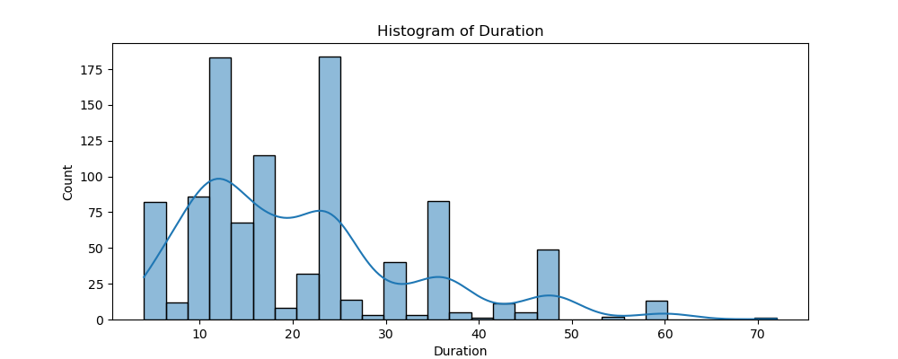
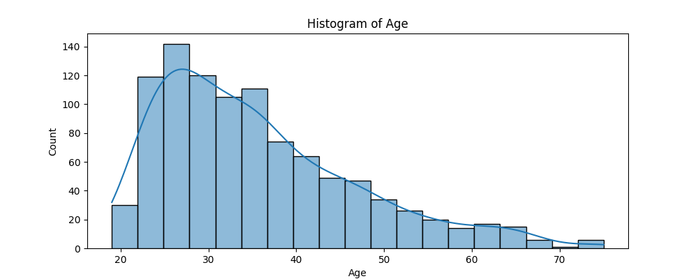
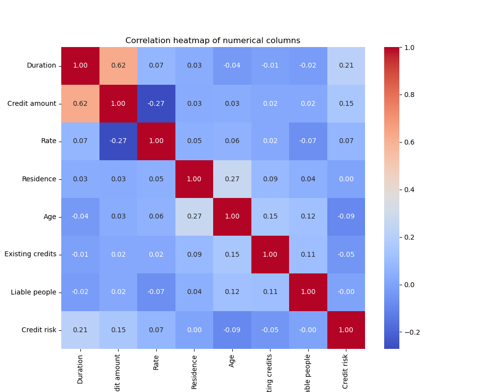
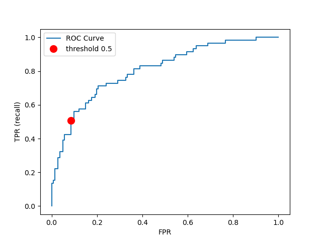
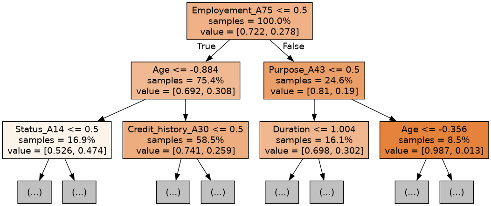
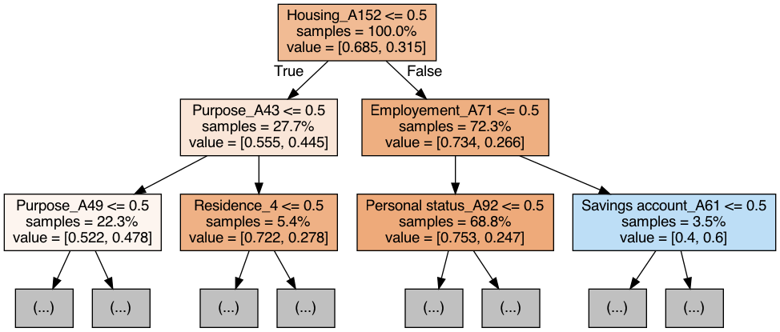
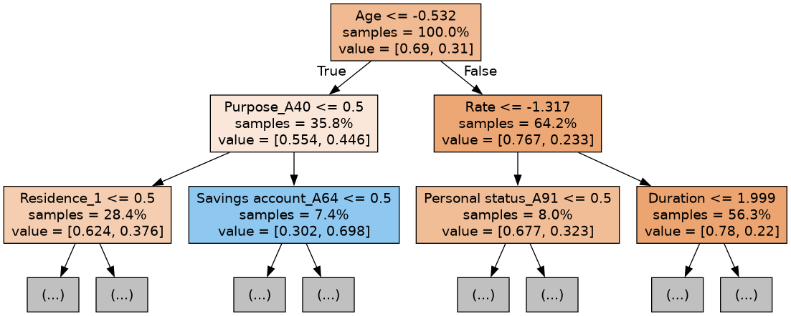

| Unnamed: 0 | fit_time | score_time | test_score | train_score |
|---|---|---|---|---|
| Dummy | 0.000663137 | 0.000576878 | 0.69875 | 0.69875 |
| Logistic Regression | 0.00460157 | 0.00120215 | 0.7425 | 0.783125 |
| Random Forest | 0.465935 | 0.0652181 | 0.75375 | 1 |
Predictive Modelling: German Credit Risk
Summary
The goal of our analysis is to classify whether someone is in a good or bad credit risk position using attributes such as Credit_History, Duration, and Residence. Our best-performing model is a Random Forest model which gave us a test score of 0.754 on unseen data, a decent result compared to the dummy model’s score of 0.699. We also obtained a accuracy score of 0.77 precision score of 0.676, a recall score of 0.424, and F1 Score of 0.521. Our model performs decently well in terms of identifying people who are at good credit position. However, if this model is to have a hand in real-world decision-making, precision should be improved to minimize classifying low credit risks as high credit risks (false positives). In addition, more research should be done to ensure the model produces fair and equitable recommendations.
Introduction
Understanding and predicting credit risk is crucial for banks in the finance sector. As the Journal of Applied Statistics shares “credit risk modelling, namely its component Probability of Default (PD), is very helpful in the consumer credit loan grant decision” (Eliana Costa e Silva and Faria 2020). Further, a report by McKinsey shares that “at an average commercial bank, credit-related assets produce about 40 percent of total revenues” (Goraieb, Kumar, and Pepanides, n.d.). With this in mind, our data science project will develop a predictive model aimed at discerning good from bad credit risk.
Our key question: How can we predict individuals with good or bad credit risk using relevant and representative input features?
The Statlog (German Credit Data) dataset, sourced from the UCI’s Machine Learning Repository (Hofmann 1994), found specifically here, can be used for classifying individuals as good or bad credit risks based on a variety of attributes. A cost matrix is required for evaluation, where misclassification costs are outlined. The cost matrix indicates that it is worse to classify a customer as good when they are bad, compared to classifying a customer as bad when they are good. The dataset contains 1000 instances with 20 features. Each feature has a different role, type, and demographic information, summarized as follows:
- Target Variable (Credit_Risk): Binary, classifies individuals as either good (= 1) or bad (= 2) credit risks
- Status of existing checking account (Attribute1): Categorical, indicates the status of the existing checking account in 4 categories, such as the balance amount or absence of a checking account.
- Duration (Attribute2): Integer, represents the duration of credit in months.
- Credit history (Attribute3): Categorical, describes the credit history of individuals in 3 categories, including whether credits were paid back duly or if there were payment delays.
- Purpose (Attribute4): Categorical, specifies the purpose of the credit in 11 categories, like for a car purchase, furniture, education, or business, etc.
- Credit amount (Attribute5): Integer, denotes the amount of credit requested.
- Savings account/bonds (Attribute6): Categorical, indicates the status of savings accounts or bonds in categorical brackets of DEM currency.
- Present employment since (Attribute7): Categorical, shows the duration of present employment.
- Installment rate (Attribute8): Integer, represents the installment rate in terms of a percentage of disposable income.
- Personal status and sex (Attribute9): Categorical, provides information about personal status and sex.
- Other debtors/guarantors (Attribute10): Categorical, indicates the presence of other debtors or guarantors.
- Present residence since (Attribute11): Integer, denotes the duration of present residence.
- Property (Attribute12): Categorical, describes the type of property owned.
- Age in years (Attribute13): Integer, represents the age of individuals.
- Other installment plans (Attribute14): Categorical, specifies other installment plans held by individuals.
- Housing (Attribute15): Categorical, indicates the housing status.
- Number of existing credits at this bank (Attribute16): Integer, denotes the number of existing credits at this bank.
- Job (Attribute17): Categorical, describes the job status of individuals.
- Number of people being liable to provide maintenance for (Attribute18): Integer, represents the number of dependents.
- Telephone (Attribute19): Categorical, indicates the presence of a telephone registered under the customer’s name.
- Foreign worker (Attribute20): Categorical, specifies whether the individual is a foreign worker.
Analysis
The project aimed to develop a predictive model to assess whether an individual represents a good or bad credit risk. To establish a baseline, a dummy model was implemented initially. Subsequently, Logistic Regression and Random Forest algorithms were employed to enhance the predictive capability. All variables in the dataset were used to fit the model. The dataset was split into training and testing sets using an 80-20 split ratio to facilitate model evaluation. Categorical variables were subjected to one-hot encoding (OHE), while continuous variables were standardized using Standard Scaler to ensure uniformity in scale across features.
Hyperparameter optimization was conducted to fine-tune the models. This process involved exploring various combinations of hyperparameters to identify the optimal settings for maximizing model performance. Additionally, a 5-fold cross-validation (CV) technique was utilized to assess the robustness of the models. Cross-validation aids in estimating the model’s performance on unseen data by partitioning the dataset into multiple subsets for training and testing.
The performance of the models was evaluated using key metrics such as precision, recall, accuracy, and F1 scores on the test set. Precision measures the proportion of true positive predictions among all positive predictions, recall measures the proportion of true positive predictions among all actual positive instances, accuracy measures the overall correctness of predictions, and F1 score is the harmonic mean of precision and recall, providing a balanced assessment of the model’s performance.
By employing these methodologies, the project aimed to develop a reliable predictive model capable of accurately discerning good and bad credit risks.
Results and Discussions
To assess the distribution of the numerical variables and whether they require scaling we plot the histogram of the numerical variables in Figure 1. In doing this we identify that duration, credit amount and age have a right-skewedness.




We see from Figure 2 that the correlation heatmap does not display not display any high correlation between two given variables which implies that there is no strong linear relationship between them. As a result, no manipulation or adjustment of the variables are required to address issues related to multicollinearity or redundancy in the dataset.
Now in Table 1 we see the performance of the different models on the training set and find their mean train and mean test scores from a 5-fold cross validation.
Both the models are performing better than our baseline model.
- Logistic Regression: It has moderate training and prediction times and achieves a decent fit score of 0.742 on the test set, indicating reasonable performance without overfitting.
- Random Forest: It takes significantly longer to train compared to logistic regression but achieves a slightly higher fit score on the test set. However, there’s a large discrepancy between the training (1.0) and test scores(0.75375), suggesting potential overfitting.
| Unnamed: 0 | Measures | Random Forest |
|---|---|---|
| 0 | Accuracy | 0.77 |
| 1 | Precision | 0.675676 |
| 2 | Recall | 0.423729 |
| 3 | F1 Score | 0.520833 |
In Table 2 we see both the models are performing well on the test set, with relatively high accuracy, precision, recall, and F1 score. It correctly classifies a majority of instances while maintaining a good balance between false positives and false negatives. Here, in this instance we would want to avoid false negatives where a person at credit risk is not deemed to be at risk, and a high recall score ensures the model is performing well in avoiding false negatives.

Figure 3 is a plot of our true positive rate/recall against false positive rate. For our case, a False Positive is when we predict someone to be a bad credit risk, when in reality they are a good credit risk. Therefore, we want to minimize False Positives while still maintaing a decent recall rate. The default predict-proba threshhold of 0.5 is our choice for balancing these two goals as it keeps the False Positive Rate quite low.
By Figure 4 we can also see the first 3 trees of the random forest model showing which variables are significant in each tree.



Conclusion
This model could potentially be used by banks to determine who they should loan money to since analyzing credit risks is important to banks (Vossos and Dobby 2024). Even though there are potential benefits to using this logistic regression model, we should keep in mind negative impacts it could have. Using a model such as the one we created could result in un-intentional discrimination. For example, Age is an attribute in our data. Our model has the coefficient -0.21 for Age indicating a larger age value will have a better credit prediction, holding other variables constant. If our model was used to determine who should get a bank loan, there would be risk of age discrimination which is unethical and illegal (“Personal Characteristics, Grounds of Discrimination Protected in the BC Human Rights Code” 2023).
While we only explored a linear regression model and random forest model, it would be interesting to see if gradient-boosted classifiers have improved accuracy and precision. If we used more complex classifiers such as lightLGBM, we would benefit from using SHAP graphs to understand how the model is making predictions generally, and on an individual basis. In addition, research could be done on how to prevent our model from discriminating based on age, gender, etc. as sometimes simply removing attributes does not lessen discrimination.
References
Eliana Costa e Silva, Aldina Correia, Isabel Cristina Lopes, and Susana Faria. 2020. “A Logistic Regression Model for Consumer Default Risk.” Journal of Applied Statistics 47 (13-15): = 2879–2894. https://doi.org/10.1080/02664763.2020.1759030.
Goraieb, E., S. Kumar, and T. Pepanides. n.d. “Credit Risk | Risk & Resilience | McKinsey & Company.” McKinsey & Company. https://www.mckinsey.com/capabilities/risk-and-resilience/how-we-help-clients/credit-risk.
Hofmann, Hans. 1994. “Statlog (German Credit Data).” UCI Machine Learning Repository. https://doi.org/10.24432/C5NC77.
“Personal Characteristics, Grounds of Discrimination Protected in the BC Human Rights Code.” 2023. BC Human Rights Tribunal. 2023. https://www.bchrt.bc.ca/human-rights-duties/personal-characteristics/.
Vossos, Tasos, and Christine Dobby. 2024. “Wall Street to Follow Canada’s Hot Capital-Relief Trade,” February. https://www.bloomberg.com/news/articles/2024-02-22/wall-street-to-follow-canada-s-hot-capital-relief-trade.